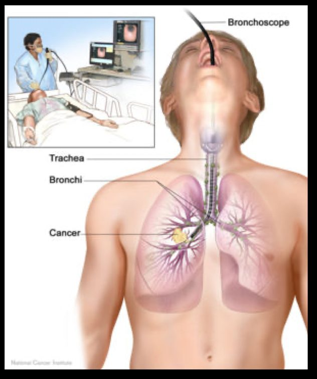
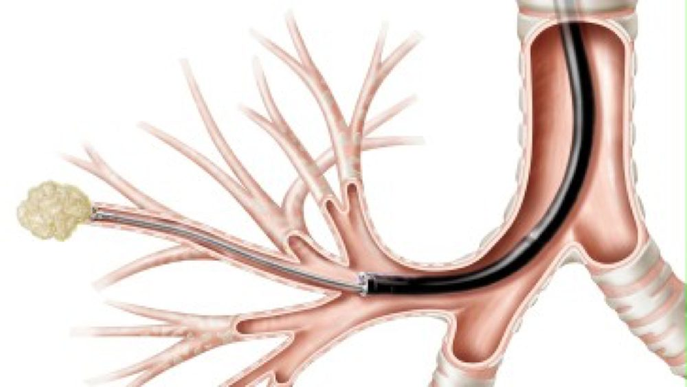
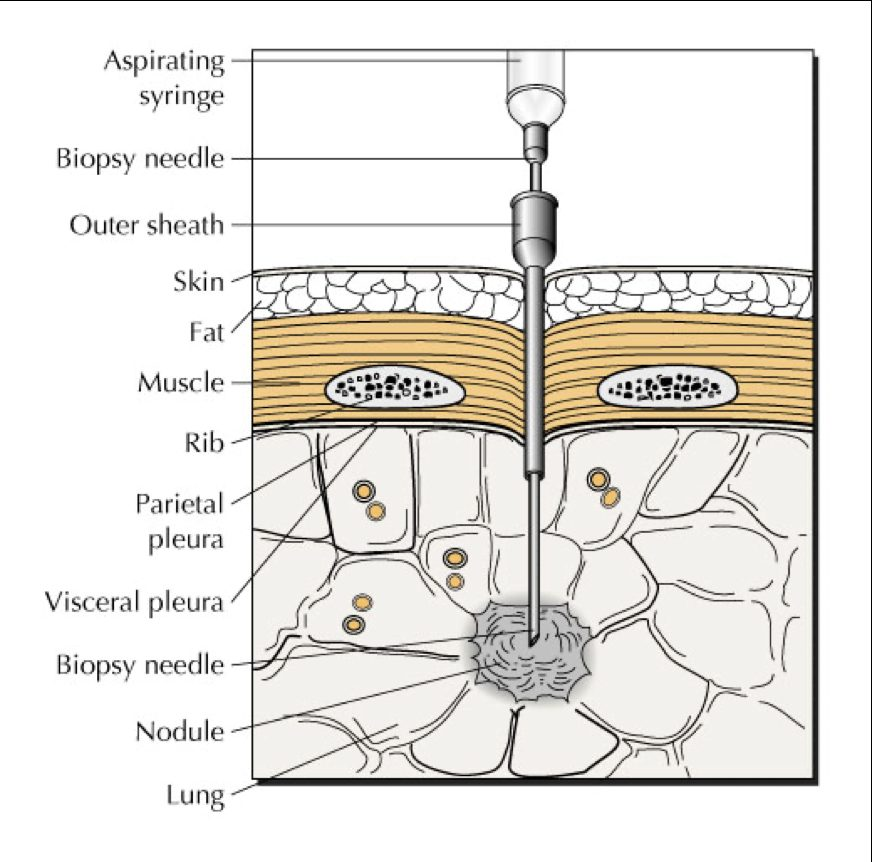
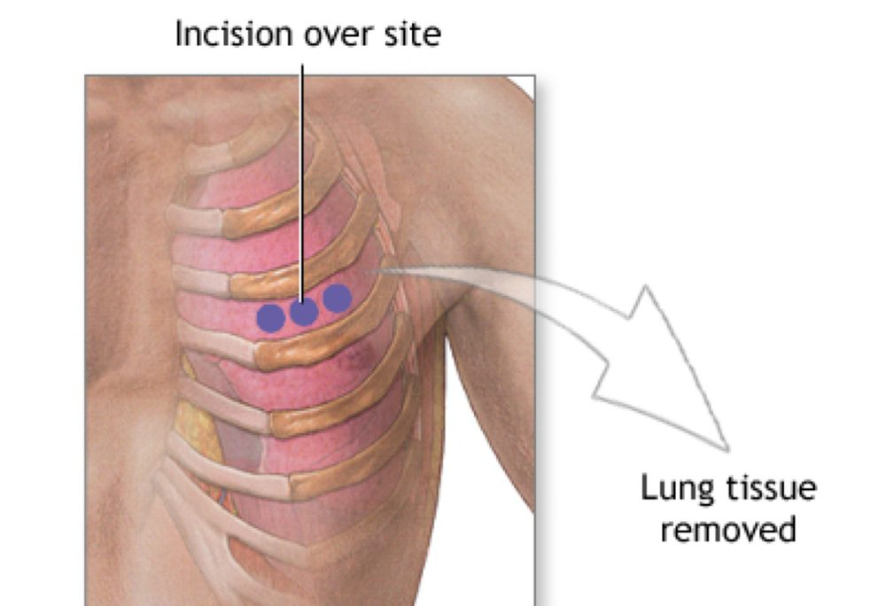
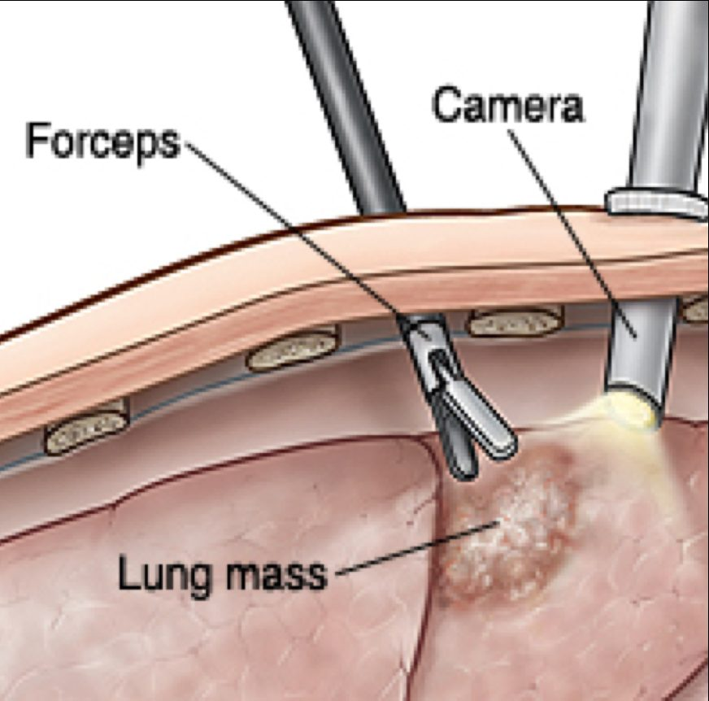

Week 1 · Topic 1
Respiratory Labs & Diagnostics
Every body system in Med-Surg gets its own labs-and-diagnostics lecture first. Related nursing care — pre- and post-procedure — is fair game on exams.
How Lab Results Are Obtained
- Venous draw — most standard labs.
- Fingerstick — most blood glucose checks.
- Arterial draw — used for an ABG (arterial blood gas). At UK this is typically done by the respiratory therapist, not the nurse.
ABGs are respiratory content, but this course saves ABG interpretation for block two — it isn't covered in depth on this page.
Pulse Oximetry
- Normal pulse ox / O2 sat: ≥ 95%.
- A low O2 sat can point to hypoventilation, atelectasis, a pneumothorax, or other lung issues.
- Non-invasive; can be intermittent (with routine vitals, e.g. Q4) or continuous (common right after surgery).
- Commonly used to titrate oxygen levels in hospitalized patients.
- Best site is the fingertip — remove nail polish first. The earlobe and toe can be used, but the finger is what the sensor is actually made for.
Sputum Tests
| Test | What It Checks For | Why It Matters |
|---|---|---|
| Culture & Sensitivity (C&S) | Whether there's bacteria in the sputum, and what it's sensitive to. | Guides antibiotic choice. |
| Cytology | Cancer cells — ordered when lung cancer is suspected. | Part of the lung cancer diagnostic workup. |
| Acid-Fast Bacillus (AFB) | Active tuberculosis. | Confirms whether latent TB has converted to active/reactivated TB. |
Collect a deep specimen (not saliva) in a sterile container and get it to the lab right away — don't let it sit at the bedside. The morning specimen is best: secretions are more concentrated after a night of lying still, and the patient hasn't eaten or had anything to drink yet.
Imaging
| Study | What It Shows | Key Nursing Considerations |
|---|---|---|
| Chest X-Ray | A 2-D snapshot of the lung. Most common views: PA and lateral. | Patient removes metal between neck and waist (bra straps, necklaces). |
| CT (CAT) Scan | Cross-sectional structures — a 3-D-style picture built from slices. | May require sedation (patient must lie still, or if claustrophobic). Loud clicking noise — warn the patient. Contrast is provider preference and is iodine-based. |
| MRI | Assesses lesions that are hard to see on CT; distinguishes vascular from non-vascular structures. | Remove all metal. May need sedation for claustrophobia in a closed MRI. Contrast used is not iodine-based. |
| PET Scan | Physiology and function (blood flow, sugar uptake) rather than just structure — uses an injected radioactive tracer. | Used heavily for cancer diagnosis, and for some brain disorders (Alzheimer's, epilepsy, brain tumors). |
A shellfish allergy is not actually linked to contrast reactions — the real concern is an iodine allergy. Some standardized tests (including the NCLEX) can still ask about it the old way, so know it for boards even though it's outdated in practice.
Expect a patient getting IV contrast to feel a warm flush spread through their body — that's normal, not a sign of a reaction, but tell them beforehand so it doesn't alarm them.
TB Testing
TB Skin Test (Mantoux)
- Injected intradermally, at only a 10–15° angle — just enough to raise a bleb under the skin.
- Must be read in person at a follow-up visit.
IGRA (blood test)
- Interferon Gamma Release Assay — a blood draw instead of a skin test.
- No need to return to have it read.
- Neither option is better than the other — they're just two different ways to get the same answer.
Bronchoscopy
Scopes the bronchi — used to visualize the airway and/or obtain a biopsy sample (e.g. secretions the patient can't expectorate on their own).

| Step | Rationale |
|---|---|
| Consent signed beforehand | It's an invasive procedure. |
| NPO 6–12 hours before | Reduces nausea/vomiting and aspiration risk once sedated. |
| Sedation given; oral pharynx anesthetized | So the patient doesn't gag or vomit around the scope. |
| Keep NPO after the procedure until the gag reflex returns | The throat is numbed by the anesthetic used during the procedure. |
| Blood-tinged mucus after the procedure = expected finding | Minor trauma from the scope. Document and continue to monitor — no need to notify the provider for this alone. |
Lung Biopsy — Four Ways to Get One




| Method | How It's Done | Where |
|---|---|---|
| Transbronchial Lung Biopsy | Via bronchoscopy — a piece of tissue is taken through the scope. | Endoscopy suite. |
| Trans-Thoracic Needle Aspiration | A needle is put directly through the thorax, with CT guidance. | Radiology, with CT guidance. |
| Open Lung Biopsy | Provider goes in surgically. | OR. |
| VATS (Video-Assisted Thoracic Surgery) | Video-assisted, through the thorax. | OR. |
"Scoping" always refers to going in through a natural orifice with a camera — a bronchoscopy scopes the bronchus the way a colonoscopy scopes the colon or a cystoscopy scopes the bladder. Endoscopy is the umbrella term for all of them.
Thoracentesis
A large-bore needle removes fluid (or air) from the pleural space — most often done for a pleural effusion, since fluid there reduces the surface area available for oxygen delivery and can cause respiratory problems.
| Step | Rationale |
|---|---|
| Consent signed | Invasive procedure. |
| Position: sitting upright, leaning forward, elbows on an overhead table | Pulling the elbows toward the overhead table opens up the intercostal spaces the provider needs to access. |
| Instruct the patient not to talk during the procedure | Patient needs to stay very still. |
| Chest X-ray after the procedure | Confirms the provider didn't inadvertently nick the pleura and cause a pneumothorax. |
| Assess for signs of hypoxia after | Same reason — ruling out a pneumothorax. |
A paracentesis is the equivalent procedure for fluid collected in the peritoneum (covered later, in hepatobiliary) — same idea, different space. Fluid sitting somewhere it doesn't belong and serves no purpose is called third spacing.
Pulmonary Function Tests (PFTs)
| Term | What It Measures | Why It Matters |
|---|---|---|
| Total Lung Capacity | Inhale as deep as possible, then exhale as deep as possible. | The full range of lung volume, not just a normal breath. |
| FEV1 (Forced Expiratory Volume in 1 Second) | Patient takes a deep breath in, then pushes the air out as fast as possible — how much comes out in that first second. | Patients with obstructive pulmonary disease (e.g. COPD) have trouble getting air out, not in — so their FEV1 is lower. |
| Peak Flow Meter | A small device the patient carries and blows into themselves to check their own FEV1. | Mainly an asthma-monitoring tool (covered in patho-pharm) — a falling number relative to the patient's personal best can signal an early asthma attack. |
PFTs are performed by a respiratory therapist: the patient's nose is pinched, mouth sealed around the device, breathing in and out on command.
Self-Test Flashcards
Click a card to flip it and check your answer.
Practice Questions
All 20 Must Know + Extra Practice questions for this section, pulled from the same bank as Build Your Own Exam. Answer each, then submit to see your score and rationales.